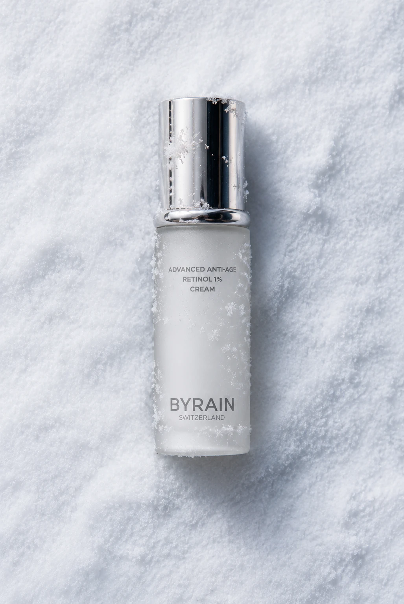

Зимний выпуск · Хит сезона
Зима — сезон ретинола
Короткий день и мало солнца: лучшее время начать курс. Липосомальный ретинол 1% с церамидами работает в полную силу и не шелушит. Вечером, 2–3 раза в неделю.
+58%упругость за 8 недель, DSM-Firmenich
86%участниц с улучшением
100%эффект на пигментацию
